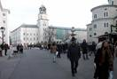

|
|
|
SALZBURG
Salzach
Mönchsberg
Panoramaansicht
Panorama an der Salzach
Augustiner Kirche
Kapuzinerberg
Kapuzinerberg
Berg in Salzburg (Österreich); mit Befestigungen und
Kapuzinerkloster (1599-1602 erbaut), 650 m. Die früher Imberg genannte
Erhebung ist bestimmend für das Stadtbild, mit bequemen Spazierwegen und
malerischen Aussichtspunkten.
Festung
Hohensalzburg
Makartsteg  Residenzplatz
Schloss Mirabell Garten mit Festung
Für seine große Liebe, die schöne Kaufmanns-tochter Salome Alt, Mut-ter seiner zehn Kinder, ließ der damals in absolutistischer Manier in Salzburg herrschende Erzbischof Wolf Dietrich
von Raitenau 1606 einen zu dieser Zeit noch außerhalb der Stadt-grenze liegenden Land-sitz errichten. Für seine Geliebte, nach der er das Schloss ›Altenau‹ nannte, erreichte er beim Kaiser die Adelserhebung. Das nützte ihr allerdings wenig. Nach dem Sturz und der Gefangenset-zung Wolf Dietrichs auf der Feste Hohensalzburg im Jahre 1612 vertrieb sein Nachfolger und Vetter Markus Sittikus sie von ›Altenau‹. Um die Erinnerung an seinen Vorgänger zu tilgen, nannte Markus Sittikus das Schloss nun ›Mira-bell‹ (= Schönblick). Unter Erzbischof Franz Anton Harrach wurde der Landsitz zwischen 1721 und 1727 umgebaut und von dem neben Fischer von Erlach bedeutendsten österrei-chischen Baumeister Lu-kas von Hildebrandt in eine barocke Schloss-anlage verwandelt. Der große Brand von 1818 beschädigte das Gebäude, woraufhin Hofbaurat Peter de Nobile das Schloss in dem eher nüchternen klassizistischen Stil seiner Zeit wieder herstellte. Glücklicherweise blieben Hof- und Gartenfassade weitgehend unverändert. Der heitere Rhythmus von plastisch hervortre-tenden Mittel- und Sei-tenrisaliten und die leicht und anmutig geglie-derten Wandflächen ver-mitteln eine Vorstellung vom ursprünglichen Aussehen dieses ba-rocken Meisterwerks. Der Vater des Salzburger Malers Hans Makart arbeitete hier im 19. Jh. als Aufseher. Von den barocken In- nenräumen ist die
Schlosskapelle erhalten geblieben. Der Marmor-saal, der früher als Spei-sesaal diente, ist nicht nur als Konzertsaal, sondern auch für Trauungen sehr begehrt. Wie auch in der Schlosskapelle wurde für die Ausstattung Stuckmarmor verwendet. Hauptsehenswürdigkeit ist jedoch das von Hildebrandt geschaffene und reich mit Bandelwerk stuckierte Trep-penhaus mit dem Geländer aus Untersberger Marmor und dem Skulpturenschmuck Georg Raphael Donners, des bedeutendsten öster-reichischen Bildhauers seiner Zeit. In den Wandnischen stehen Figuren aus der griechischen Mythologie. Wahrlich meisterhaft gelang es Donner, schwungvoll bewegte Ornamentformen und herzige Putten, die wie echte Lausbuben herumturnen und -rutschen, so zu verbinden, dass das Geländer scheinbar in Bewegung gerät und der Blick des Betrachters ganz unwillkürlich dem lustigen Treiben im Stiegenhaus folgt.
Salzburger Dom
Blick von der Festung
Festung Salzburg
Blick zur Festung
Blick über Salzburg |
Mittlere Steinzeit Älteste Spuren der Anwesenheit des Menschen im Stadtgebiet Jüngere Steinzeit Erste Dauersiedlungen auf den Stadtbergen und auf Schotterterrassen in Liefering und Maxglan-Bolaring
Bronzezeit
Eisenzeit 1.–5. Jahrhundert Römersiedlung Iuvavum um 45 nach Christus Kaiser Claudius verleiht Iuvavum das Munizipalrecht
171 um 470 Hl. Severin in Iuvavum
488 um 696 Bischof Rupert von Worms kommt nach Salzburg
739 um 755 Erstbeleg des deutschen Namens „Salzburg“
798
996
1249
1287
1407
1481
1511
1524 ab 1598 Barocke Umgestaltung der Stadt durch Erzbischof Wolf Dietrichs
1620–1646
1622/23
1756 ab 1772 Salzburg wird Zentrum der süddeutschen Aufklärung
1787
1800
1805
1810
1816
1818
1842
1852
1859
1860
1869
1870
1909
1914
1920
1926
1935
1938
1939
1940
1944/45
1945
1947
1950
1953
1953
1955
1956
1960
1960
1962
1963
1967
1967
1971
1971
1973
1975
1978–1986
1985
1987
1988
1988
1991
1993
1994
1995
1996
1996
1997
1998
1999 Umgestaltung des Bahnhof-Vorplatzes abgeschlossen 9. Oktober 2000 Nach 30 Jahren Lebensdauer wird mit einer spektakulären Demontage der Makartsteg über die Salzach abgebrochen. Ende Nov. wird mit dem Bau des neuen Stegs begonnen.
|